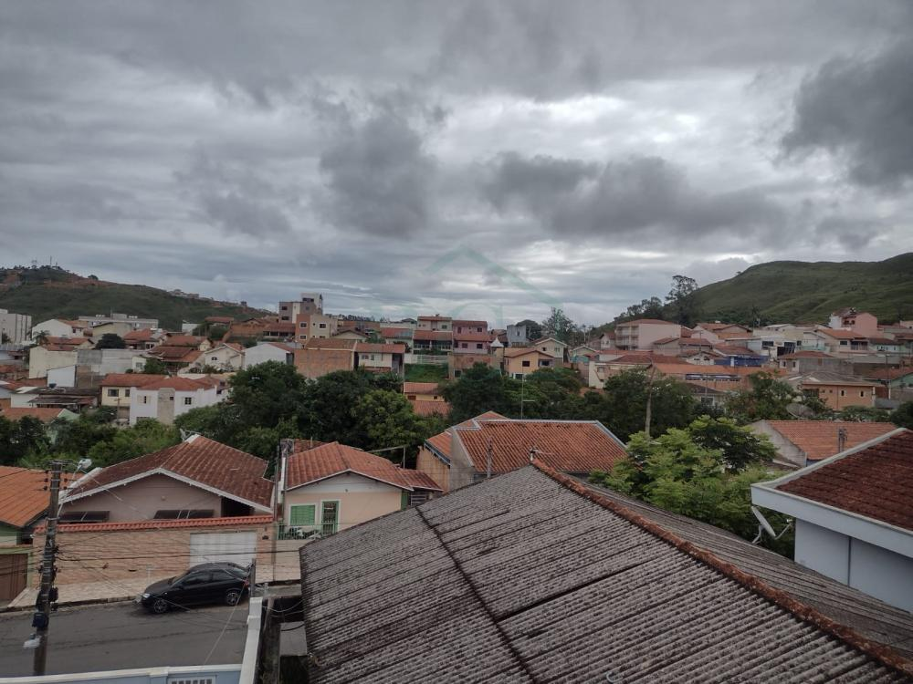
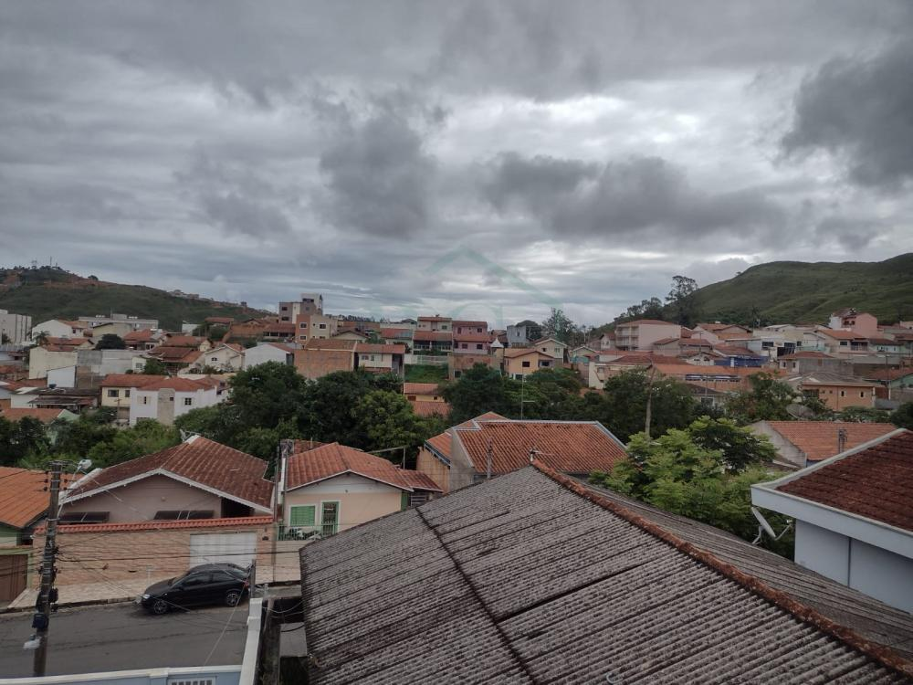
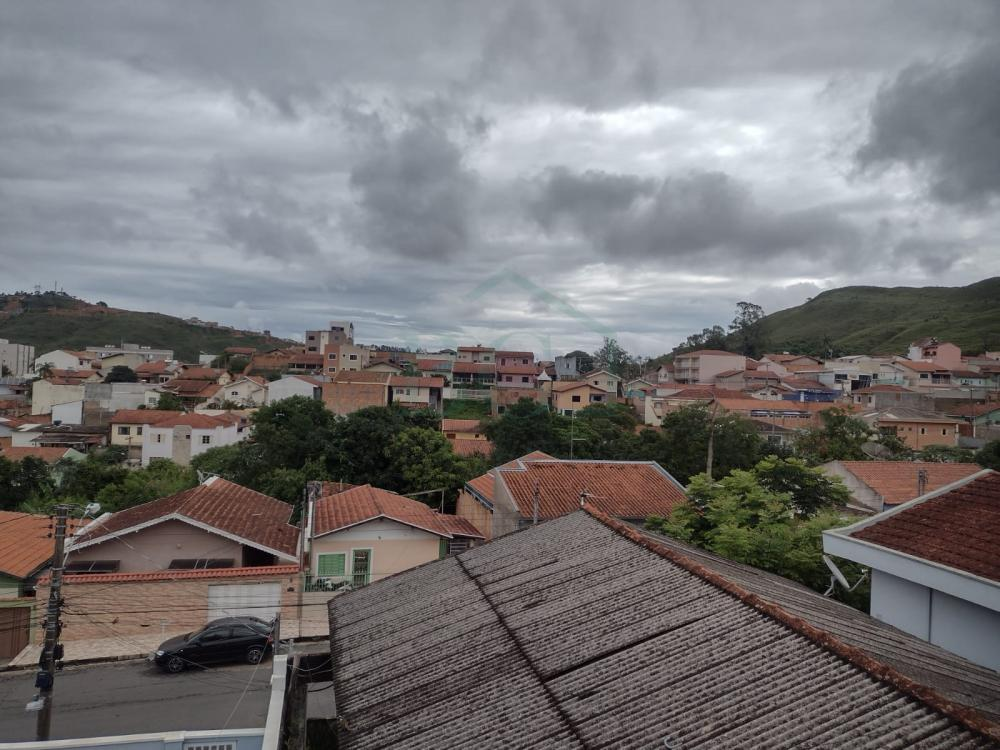

Sobre o Bairro
O bairro Caio Junqueira, localizado em Poços de Caldas, é conhecido por sua comunidade ativa, ruas arborizadas e ambiente familiar. Este portal é dedicado a conectar moradores, divulgar eventos, notícias e serviços.
 

O bairro Caio Junqueira, localizado em Poços de Caldas, é conhecido por sua comunidade ativa, ruas arborizadas e ambiente familiar. Este portal é dedicado a conectar moradores, divulgar eventos, notícias e serviços.
